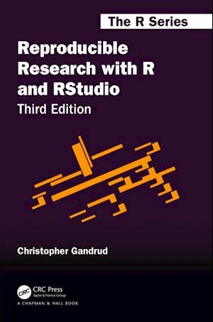

Intro to RRR
Introduction to Reproducible Research with R (and RStudio).
1 Reproducible Research
1.1 What it is …
“Facilitate easy and accurate reproducibility of all steps of research: Results, process and comprehension – from raw data to finished output”

1.2 Why
- To help yourself not get lost (or find your way again)
- Documentation (formal/legal)
- Reproducibility (from A-Z)
- Reuseability (different outputs)
- Recycling (reassemble for other purposes)
1.3 Levels of research reproducibility
Aim for level four ‘Product documentation’ (**) – Level 5 ‘Process documentation’ can be quite involved and is probably only relevant when many authors collaborate on the same code/data (if it is important to know who did what when, i.e. who screwed up).